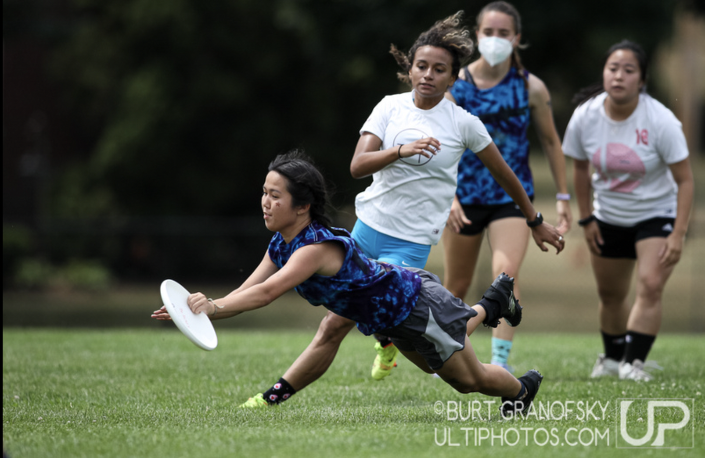
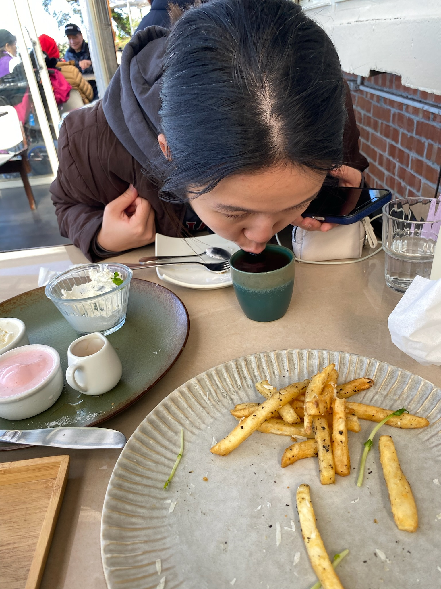
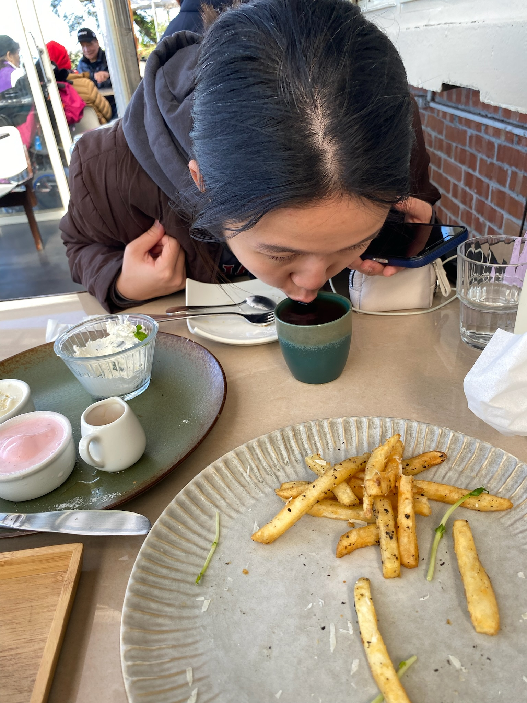
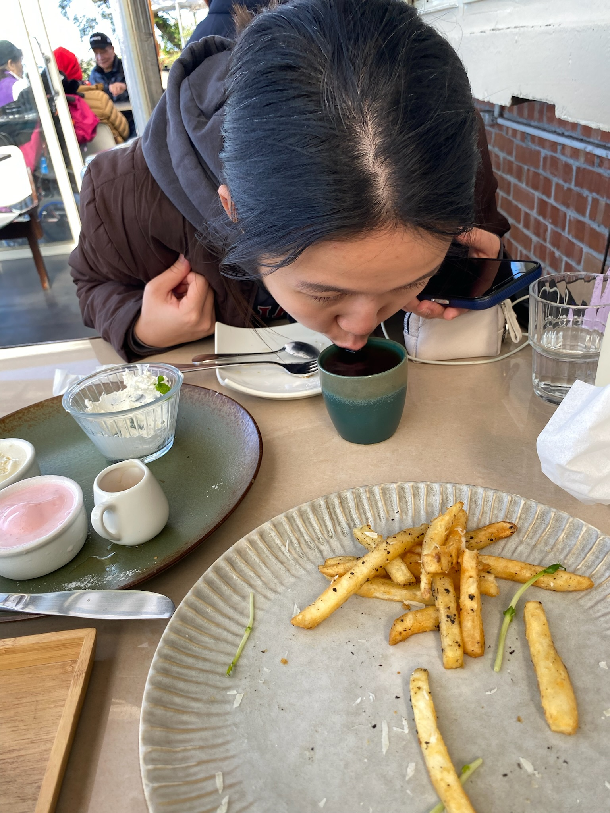

ABOUT ME
(jocelyn hsieh)
Hi! I'm a senior in Currier House, studying Computer Science and Neuroscience. I like making things (websites/apps/pastries/art/crochet), and am excited to expand my domain.
In my free time, I like to play ultimate frisbee, run, and drink tea.

 


I'm from Lexington, MA & my family is Taiwanese! Ask me about the olfactory system, graph theory, or ACLs :D